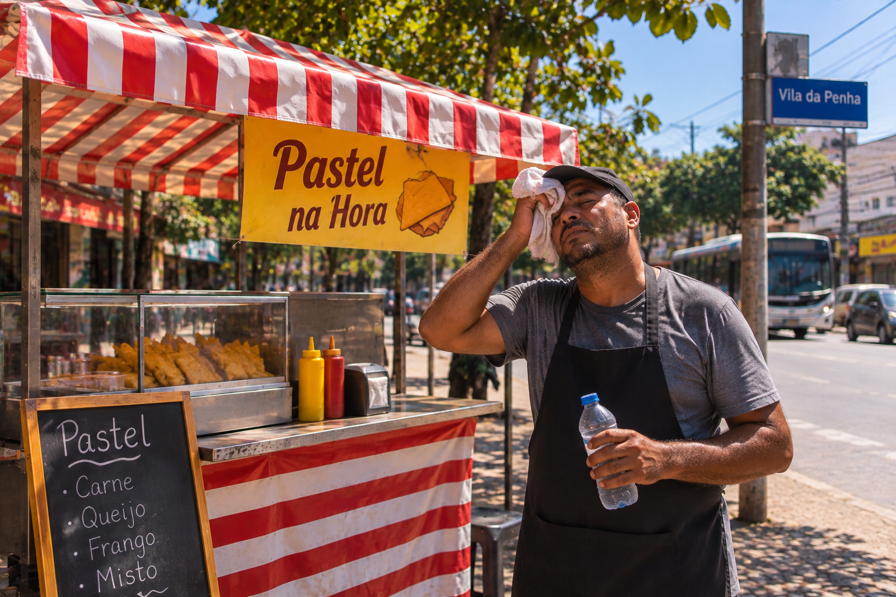

Exposição ao sol
A exposição prolongada ao sol e ao calor pode provocar desgaste físico e aumentar os riscos à saúde.
O Respiro RJ é uma solução tecnológica desenvolvida para proteger vendedores ambulantes do Rio de Janeiro que enfrentam longas jornadas de trabalho sob calor intenso. Por meio do monitoramento da temperatura e da umidade, o projeto busca prevenir riscos à saúde e promover condições de trabalho mais seguras.

No Rio de Janeiro, vendedores ambulantes enfrentam longas jornadas de trabalho expostos ao sol e às altas temperaturas. Na Vila da Penha, bairro da Zona Norte escolhido como referência para o projeto, essa realidade ajuda a representar os desafios enfrentados por trabalhadores de diferentes regiões da cidade. Para muitos, interromper o trabalho também pode significar perder parte da renda do dia.
A exposição prolongada ao sol e ao calor pode provocar desgaste físico e aumentar os riscos à saúde.
O calor intenso pode contribuir para desidratação, exaustão térmica e outros problemas de saúde.
Muitos ambulantes precisam continuar trabalhando mesmo em condições de calor intenso para garantir sua renda.
Registros do Sistema Alerta Rio mostram sensações térmicas extremas em diferentes regiões da cidade, incluindo a Zona Norte.
Zona Oeste do Rio de Janeiro
17 de março de 2024Zona Sul do Rio de Janeiro
17 de março de 2024Zona Norte do Rio de Janeiro
9 de janeiro de 2024Fonte: Sistema Alerta Rio / Centro de Operações Rio.
Os valores representam sensação térmica registrada por estações meteorológicas, não temperatura do ar.
Consultar notícia oficial ↗O Respiro RJ apresenta a Sentinela do Calor, uma solução pensada para monitorar as condições dentro das barracas de vendedores ambulantes, emitir alertas e ajudar na prevenção dos riscos causados pelo calor extremo.
A Sentinela do Calor utiliza sensores para medir a temperatura e a umidade dentro da barraca, acompanhando as condições do ambiente mesmo sem conexão com a internet.
O dispositivo sinaliza o nível de risco por meio de luzes: verde para normal, amarela para atenção e vermelha para perigo, ajudando o trabalhador a identificar situações de calor intenso.
Quando o calor atinge o nível de perigo, a Sentinela aciona automaticamente o ventilador da barraca. No site, esse funcionamento é apresentado por meio de uma simulação.
Após uma hora seguida em situação de perigo, a Sentinela emite um alerta sonoro e visual recomendando uma pausa de cinco minutos. O site também apresenta orientações de hidratação e proteção.
Simule o funcionamento da Sentinela do Calor, desenvolvida para acompanhar a temperatura e a umidade dentro das barracas de vendedores ambulantes do Rio de Janeiro.
Barraca 01 | Demonstração da Sentinela do Calor
Temperatura ambiente
Umidade relativa
Classificação do risco
Sensação térmica
Ajuste a temperatura e a umidade para observar os níveis de risco e o funcionamento dos alertas da Sentinela do Calor.
Ventilação simulada desativada
Aguardando condição de perigo
Mantenha água disponível, reduza a exposição ao sol e acompanhe as condições do ambiente.
Este painel é uma simulação acadêmica da Sentinela do Calor. No projeto, o alerta de pausa é previsto após 1 hora seguida em perigo, recomendando 5 minutos de descanso. A demonstração utiliza tempos reduzidos e não representa medições reais.
Simule a jornada de um vendedor ambulante no Rio de Janeiro e identifique os horários em que o calor pode representar um risco maior à saúde.
Selecione seus horários e clique em analisar para visualizar os períodos de maior calor.
Esta análise utiliza temperaturas fictícias para demonstrar possíveis períodos de risco durante uma jornada de trabalho. Os resultados não representam medições reais nem previsões meteorológicas.
Para vendedores ambulantes do Rio de Janeiro, encontrar um espaço protegido do calor pode fazer a diferença durante a jornada de trabalho. Conheça exemplos de locais que podem oferecer sombra, hidratação e descanso.
Áreas arborizadas ou com cobertura que ajudam a reduzir a exposição direta ao sol.
Proteção solar Explorar pontos de sombra →Espaços com acesso à água potável para que o trabalhador possa se hidratar durante o dia.
Hidratação Explorar pontos de hidratação →Locais protegidos do sol, com circulação de ar e espaço para uma pausa segura.
Recuperação Explorar pontos de descanso →Os pontos apresentados são exemplos ilustrativos. O Respiro RJ ainda não possui um cadastro de locais reais, e a disponibilidade desses espaços precisa ser verificada.